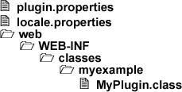

4.3.1. Lifecycle methods
The starting point of every plug-in that needs access to the Docmenta Plug-in API is the interface org.docma.plugin.Plugin. To create such a plug-in you need to create a Java class that implements this interface. The interface defines lifecycle methods as listed in the following table:
| Method | Description |
|---|---|
| onLoad | This method is called when the plug-in is loaded, e.g. on server-startup. |
| onUnload | This method is called when the plug-in is unloaded, e.g. when the plug-in is uninstalled or disabled. |
The simplest plug-in without any functionality is as follows:
1
2
3
4
5
6
7
8
9
10
11
12
13
14
15
| package myexample;
import org.docma.plugin.Plugin;
import org.docma.plugin.PluginContext;
public class MyPlugin implements Plugin {
public void onLoad(PluginContext ctx) throws Exception {
// insert your code here
}
public void onUnload(PluginContext ctx) throws Exception {
// insert your code here
}
}
|
Listing 4.3.1.
There is a default implementation of this interface that just provides no-operation implementations of all interface methods. The classname of the default implementation is org.docma.plugin.DefaultPlugin. Therefore, the code above can be reduced by creating a class that extends org.docma.plugin.DefaultPlugin:
1
2
3
4
| package myexample;
public class MyPlugin extends org.docma.plugin.DefaultPlugin {
}
|
Listing 4.3.2.
Note that the Docmenta plug-in framework creates an instance of the plug-in by calling the default constructor of your plug-in class (i.e. the constructor without parameters). As a consequence, your plug-in class is not allowed to declare the default constructor as private. Anyhow, it is discouraged to define a constructor at all, because all functionality should be provided by overwriting the lifecycle methods.
To test the lifecycle methods, we create a plug-in that just writes some messages to the application's log:
1
2
3
4
5
6
7
8
9
10
11
12
13
14
15
16
| package myexample;
import org.docma.plugin.*;
public class MyPlugin implements Plugin {
public void onLoad(PluginContext ctx) throws Exception {
Logger log = ctx.getApplicationContext().getLogger();
log.info(ctx.getPluginId() + ": onLoad");
}
public void onUnload(PluginContext ctx) throws Exception {
Logger log = ctx.getApplicationContext().getLogger();
log.info(ctx.getPluginId() + ": onUnload");
}
}
|
Listing 4.3.3.
The lifecycle methods have a parameter of type org.docma.plugin.PluginContext. This parameter allows to access the Docmenta environment. In the example above, this parameter is used to get the application context, which in turn allows access to the application logger. Furthermore, the PluginContext object allows to retrieve the plug-in properties, e.g. the getPluginId() method returns the plug-in identifier that is defined in the plugin.properties as shown below.
To be able to install the plug-in, we need to create a plug-in package. Therefore, create a file-structure as described in Chapter 4.2, Creating a plug-in package and place the compiled class in the web/WEB-INF/classes folder. Alternatively add the class files to a JAR archive and place the JAR file in the lib or web/WEB-INF/lib folder. The resulting file structure should be as follows:

Figure 4.3.1. Plug-in package structure
Before creating the zip package, the files
- plugin.properties and
- locale.properties
need to be adapted. Following an example of the plugin.properties file:
id = my_plugin
version = 1.0
plugin_class = myexample.MyPlugin
required_app_version = 1.9
show_license = false
load_type = next_startup
Listing 4.3.4. plugin.properties (log example)
The plugin_class property is an optional property that is required only if a custom plug-in class shall be provided. In the example above, Docmenta is instructed to instantiate the plug-in class myexample.MyPlugin instead of the default plug-in class. For an explanation of the other properties see Chapter 4.2, Creating a plug-in package. Note that the load_type property needs to be set to "next_startup", because the added myexample.MyPlugin class will not be available until the next web-server startup.
For completeness, following an example of the locale.properties file:
my_plugin.description = A simple logging Plug-in
my_plugin.help_url =
Listing 4.3.5. locale.properties (log example)
Note that in this example the property my_plugin.help_url is set to an empty string, because we do not provide a help-page for our plug-in until now.
Finally, we can create the zip-package and install the plug-in as described in Section 2.7.5, “Installing Plug-ins”.
To test the plug-in, enable and disable the plug-in in the administration panel (see Section 2.7.5, “Installing Plug-ins”) and check the web-server log file for the appended log messages.
Creating a web-application plug-in
If you want to create a plug-in that extends the web user-interface of Docmenta, then the plug-in has to implement the org.docma.plugin.web.WebPlugin interface. This interface extends the Plugin interface by adding the lifecycle methods shown in the following table:
| Method | Description |
|---|---|
| onInitMainWindow | This method is called when the main window of a new user session is initialized. This occurs on every user login. |
| onShowConfigDialog | This method is called whenever a user clicks the "Configure" button of the plug-in (see Section 2.7.5, “Installing Plug-ins”). See also Section 4.3.3, “Adding a dialog” on how to create a custom dialog. |
Again there is a default implementation that just provides no-operation implementations of all interface methods. The classname of the default implementation is org.docma.plugin.web.DefaultWebPlugin.
Following code shows a simple WebPlugin implementation that just writes a log message whenever one of the WebPlugin lifecycle methods is called:
1
2
3
4
5
6
7
8
9
10
11
12
13
14
15
16
17
18
19
20
21
22
| package myexample;
import org.docma.plugin.*;
import org.docma.plugin.web.*;
public class MyWebPlugin extends DefaultWebPlugin {
@Override
public void onInitMainWindow(WebPluginContext ctx,
WebUserSession webSess) {
Logger log = ctx.getApplicationContext().getLogger();
log.info(ctx.getPluginId() + ": user " +
webSess.getUser().getLoginId() + " logged in.");
}
@Override
public void onShowConfigDialog(WebPluginContext ctx,
WebUserSession webSess) {
Logger log = ctx.getApplicationContext().getLogger();
log.info(ctx.getPluginId() + ": onShowConfigDialog");
}
}
|
Listing 4.3.6.
Note that WebPlugin methods have an additional parameter of type org.docma.plugin.web.WebUserSession, which allows access to the user session. In the example above this parameter is used to retrieve the user's login name.
For more information on the available methods and its parameters see the Docmenta Plug-in JavaDoc documentation.
The next sections describe how to add menu items, dialogs and tabs to the user interface of Docmenta. Furthermore the sections give a general introduction in using the Plug-in API.